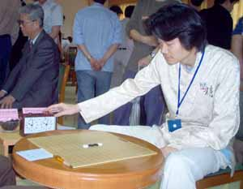
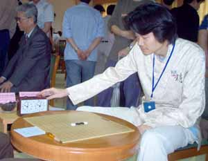

谁最有可能问鼎本届全锦赛
#1 谁最有可能问鼎本届全锦赛 作者：有志青年 发表时间：2007-10-6 8:19:13
（天津消息 通讯员：葛迅） 10 月 3 日—— 6 日，在天津举办的全国五子棋锦标赛还剩下最后一轮，但是冠军的归属仍然是扑朔迷离。在最后一轮，上海代表队黄宇峰三段、北京那威俱乐部队曹冬六段和裁决殿队吴镝五段等 3 人在一定程度上都有夺冠的可能性。黄宇峰如果胜吴镝，将铁定冠军；如同吴镝打和，则要看曹冬情况，如曹冬和棋，则黄将以大分领先半分的优势夺冠，如曹冬获胜，因为曹冬小分占优，将获亚军；综合考虑，黄宇峰夺冠可能性 75% 。吴镝要拿冠军，除了必须战胜黄宇峰，还要看曹冬的脸，如曹冬也同样胜，双方比拼小分，曹冬占优，综合考虑，吴镝夺冠可能性 50% 。曹冬要再度夺冠，除了必须胜张轶峰外，还得指望吴镝至少守和黄宇峰，综合考虑，曹冬夺冠可能性 70% 。
 
